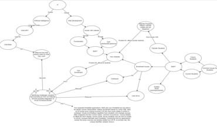
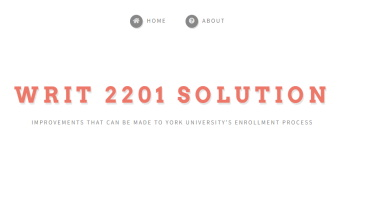
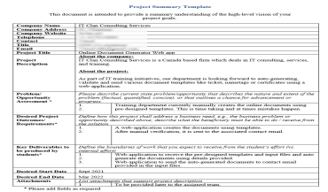
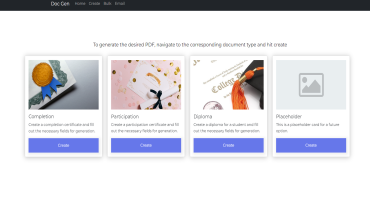

From design to implementation,
I have the tools for the job.
I love problem-solving with programming. Whether it is gathering data for something like the stock market or automating tedious tasks using whatever mechanic is available, I create and optimize solutions that make life easier. To accomplish this, I focus on the task at hand, develop viable solutions, and optimize those solutions once implemented.
Throughout my life, I have been constantly entertained by solving problems. When I was younger, I would automate tasks and leveling processes in video games and found it satisfying. Understanding the inner workings of these games and optimizing my approach put me on cloud nine. The satisfaction of knowing my approach would reap benefits made me truly appreciate my problem-solving skills.
This appreciation grew further as I discovered programming. My main focus these days is building much larger-scale projects with a higher complexity level through Python.
Languages: Python | Java | C# | React
Other Skills: HTML | CSS | GIT
Dev Tools: PyCharm | Netbeans | IntelliJ | Eclipse
Database: SQL
Operating System: Windows
Recent Work
WRIT 2201 IT Solution

Concept Map
In this WRIT 2201 assignment, we were asked to produce a concept map that identified an IT-related problem. This assignment was used to develop ways of thinking on that topic and narrow it down.
Concept mapping allowed me to narrow down my topic and focus on a specific problem. Through this narrowing process, I was able to find a specific IT-related problem that affects students at York University. Specifying a problem removes potential vague interpretations others could have when looking at an issue; through the use of concept maps, I was able to focus on an issue and provide a specific solution. Concept maps are a great reusable tool when identifying an appropriate topic; In fact, this was my second version of concept mapping when specifying an IT-related problem. Creating concept maps improved my ideation when exploring solutions and could greatly improve communication with stakeholders when developing a large project.

Draft Website
In this WRIT 2201 assignment, we were asked to provide an overview of our IT-related problem and justify the significance of developing a solution. After addressing the issue, we would propose a particular solution supported by in-text citations and research to explain our reasoning. Finally, we concluded our draft by advocating why the solution was recommended.
My draft website is the result of my research process after specifying my IT-related issue through concept mapping. It includes many guidelines and principles found during my research and how York's enrollment process can be improved by following them. The potential audience was a driving factor in the design and content of the website with some content being cut out. I wanted the website to only provide information I deemed necessary to convey to the audience; who I assumed to be York's Administration Office. Upon reflection, I regret how I recorded the video as there was an error shown during the demo. This error had occurred because I moused over an element that scrambled an input being sent to York’s Visual Schedule Builder. Although this error would have never occurred if the process was from York's backend I should have rerecorded another video especially since I emphasized an audience-focused website and errors are not professional. This assignment serves as a reminder to always be cognizant of your targeted audience and through this lesson I feel more confident identifying who that audience is.
IT Clan Consulting Services Capstone Project

Capstone Design
For college, two other students and I were tasked to do a capstone project that communicated with an actual stakeholder from IT Clan Consulting Services. We were to fulfill his desired project requirements while conducting two sprints in Agile Scrum methodology. The end goal was a web application used to create documents from templates that could be sent to associates via email.
In these two sprints, we addressed several factors when designing the project. Factors like scope, deliverables, assumptions, dependencies, risks, and the company's business processes were conceptualized in the process of project planning. After each sprint, we would communicate with the stakeholder to confirm if our planning aligned with his objective and would alter our plans if they were not. This project was my first introduction to a workplace development process utilizing Agile methodology. It improved my ability to communicate with team members when delegating tasks focused on their strengths and my flexibility when altering project plans.
Capstone Design - Business Context Diagram
Capstone Design - Web Mockup 1
Capstone Design - Web Mockup 2

Capstone Implementation
This is the second stage of the capstone project. After planning and communicating with the stakeholder, we had to develop a prototype application that could be utilized to generate documents from templates.
We began developing the prototype’s frontend and backend and decided to use HTML, CSS, and Node.js because we felt the prototype would be easy to implement using those technologies. The majority of implementation went smoothly due to the three-month planning time we were given. We had minor issues with the website’s appearance, but they were quickly addressed as we collaborated more efficiently. As the deadline drew near, we completed all the desired outcomes, including document generation and manual verification through email in a sleek, modern, and minimalistic web application. This stage of the project improved my coding capability in HTML, CSS, and Node.js and my ability to take initiative. One of my team members had moved back to Vietnam during the implementation phase, and we had to be flexible in the face of the sudden time difference. By delegating tasks, we could organize what needed to be finished and completed our project on time.
Capstone Implementation - Web Prototype 2
Capstone Implementation - Web Prototype 3
Capstone Implementation - Generated Document Example 1
Capstone Implementation - Generated Document Example 2
Capstone Implementation - Generated Document Example 3
Interested?
Get in touch with the form below!
-
Address
Based in
Toronto, Canada
-
Phone
123-456-7890
-
Email
dom@gop.york
Rationale
I created my ePortfolio as a hybrid between a skill showcase and an improvement identifier ePortfolio— a hybrid meshes well with the assignment's requirements of providing four artifacts, each with reflections/analysis. I decided to have employers as my targeted audience as they would generally view previous projects of potential employees and their capable skills. Having employers as my targeted audience allows the use of technical jargon and the inclusion of a minor hard skills list in my introduction. My introduction includes a brief description of why I'm in the IT field and allows an opportunity to introduce myself, which resume formats generally don't have. This introduction serves as a hook that captures my readers' attention to the projects I have made. I designed my ePortfolio to be one page with all the buttons and icons redirecting the audience to extended details of my artifacts or additional ways to contact me instead of shifting their attention away from me. My artifacts follow the two-stage design and implementation process, highlighting my potential as a developer or IT project manager. The images can be clicked to view a gallery that includes multiple photos used to illustrate what each project had. Most of the rationale behind this ePortfolio is my group's research for the presentation. I heavily emphasize audience consideration, such as jargon consideration and artifact selection, because catering to an audience or stakeholder is what I mentioned in my reflections. My ePortfolio's layout is heavily influenced by an ePortfolio I found during research by frontend engineer Brittany Chiang. However, my descriptions are much larger than hers because my preferred position is an IT project manager. I also used the tip mentioned in Group G's presentation to not leave any personal information, specifically how I said, "Based in Toronto, Canada," instead of providing my actual address.
{kind=link}
{kind=link}
{kind=link}
{kind=link}
{kind=link}
{kind=link}
{kind=link}
{kind=link}
{kind=link}
{kind=link}
{kind=link}
{kind=link}